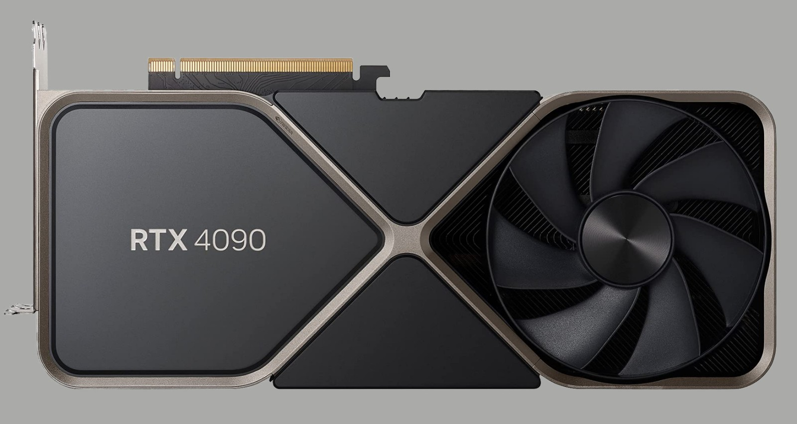

Делитесь лучшими игровыми моментами
Теперь вы можете записывать и публиковать свои игровые видео и прямые трансляции в YouTube или Twitch.
С технологией NVIDIA ShadowPlay™ вы можете транслировать геймплей без ущерба для производительности в играх.
Внутриигровой оверлей GeForce Experience позволяет делать это легко и быстро.
Персонализируйте свои игры при помощи фильтров изображения Freestyle
Игровой фильтр NVIDIA Freestyle позволяет применять фильтры постобработки прямо во время игрового процесса.
Вы можете изменить внешний вид и настроение игры при помощи настройки цвета или насыщенности или использовать такие фильтры постобработки, как HDR.
Функция Freestyle интегрирована на уровне драйвера для полной совместимости с поддерживаемыми играми.
Оптимизируйте игровые настройки
GeForce Experience избавляет вас от проблем, выбирая конфигурацию графических настроек в играх за вас.
Не знаете, какой уровень фильтрации текстур установить в Overwatch? Не беспокойтесь.
NVIDIA использует мощность своих облачных дата-центров, чтобы протестировать тысячи конфигураций ПК и найти оптимальный баланс производительности и качества изображения.
Затем GeForce Experience автоматически конфигурирует графические настройки в играх на основе параметров вашей видеокарты, CPU и дисплея.
Гиперреализм. Высочайшая скорость.
Архитектура Ada раскрывает весь потенциал трассировки лучей, которая моделирует поведение света в реальном мире.
Погрузитесь в невероятно детализированные виртуальные миры благодаря производительности карт RTX 40 и ядер RT третьего поколения.
GeForce RTX 4090 БОЛЬШЕ ЧЕМ СКОРОСТЬ
NVIDIA® GeForce RTX™ 4090 — лучшая видеокарта GeForce. Она обеспечивает огромный скачок в производительности, эффективности и графике на базе искусственного интеллекта.
Испытайте сверхвысокопроизводительные игры, невероятно детализированные виртуальные миры, беспрецедентную производительность и новые творческие возможности.
Эти видеокарты созданы на базе архитектуры NVIDIA Ada Lovelace, с 24 ГБ памяти G6X, и обеспечивают непревзойденные возможности для геймеров и авторов контента.
